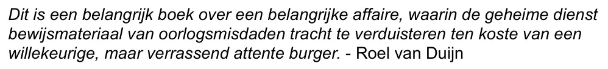

Bewijsstuk · E-mail
Roel van Duijn aan Giltay, 8 mei 2015
De passage
“Dit is een belangrijk boek over een belangrijke affaire, waarin de geheime dienst bewijsmateriaal van oorlogsmisdaden tracht te verduisteren ten koste van een willekeurige, maar verrassend attente burger.” Pagina 1, de cursieve alinea midden in het bericht. In het document staat de zin op zichzelf, cursief, gevolgd door de toeschrijving ‘- Roel van Duijn’, met een gewoon koppelteken. Het citaat in de stemmensectie en de tekst hierboven laten die toeschrijving weg.

Waarom dit document telt
Het oordeel van Roel van Duijn in de stemmensectie komt uit deze e-mail. Van Duijn, een politicus die zelf decennialang door de inlichtingendiensten werd gevolgd, zette de zin als losse, cursieve alinea in een kort persoonlijk bericht en ondertekende hem met zijn eigen naam.
Herkomst
- Document
- E-mail, één pagina, als pdf geprint uit het Gmail-account van de ontvanger
- Van
- Roel van Duijn, politicus. De kop toont alleen de weergavenaam ‘Roel’; zijn e-mailadres is in deze pdf zwartgelakt
- Aan
- Edwin Giltay
- Datum
- 8 mei 2015, 17:01 uur
- Onderwerp
- ‘Re: Diepvriesfiguur’
- Wisseling
- Eén bericht; de Gmail-kop vermeldt ‘1 bericht’. Het bericht waarop Van Duijn antwoordde, maakt geen deel uit van deze afdruk
- Ondertekening
- Roel van Duijn, omschreven als ‘Liefdesverdrietconsulent’, met de websites liefdesverdriet.info en roelvanduijn.nl
- Zwartgelakt
- Het e-mailadres van de afzender, de naam in de openingszin en de adres- en telefoongegevens in de ondertekening zijn zwartgelakt
- Taal
- Nederlands
- Aangehaald in
- Eindnoot 399 van het boek, die de aanbeveling tot deze e-mail herleidt
- Kopie
- Op 25 juli 2026 geprint uit Gmail, zoals de voettekst van de pagina toont
- Pagina’s
- 1
- Berust bij
- Edwin Giltay, de ontvanger
Aangehaald in: de stemmensectie.
Bewijsstukpagina: https://
Document: https://
Laatst gewijzigd 26 juli 2026, geraadpleegd 3 oktober 2026.

Deze pagina is een bewijsstuk bij het boek De doofpotgeneraal van Edwin Giltay en de bijbehorende website.